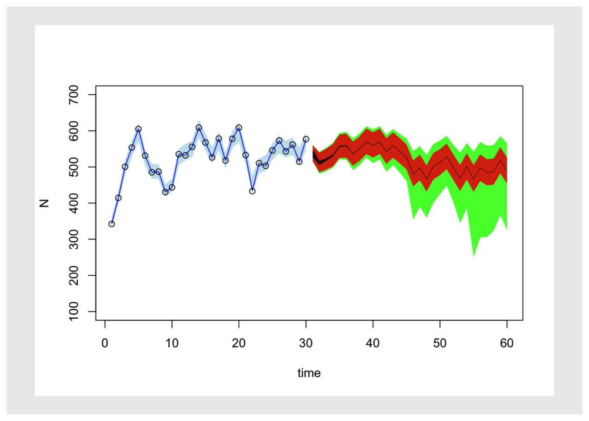

Problems 2.5. Propagating uncertainty
The models presented in the Hurford and Watmough (2021) book chapter do not contain any description of uncertainty. However, unlike Problems 2.4 the model in Hurford and Watmough (2021) does have a similar shape to the data and the parameters have been estimated using maximum likelihood (which may be helpful to informing priors).
The exercise in Chapter_11_UncertAnalysis.Rmd shows how to partition uncertainty, using the Monte Carlo method and by adding sources of error sequentially.
I am not sure how to write an if statement in JAGS, so we will separate the data into before the peak and after the peak. The data needed for this exercise can be found here: https://github.com/ahurford/reescalation-chapter.
Run Chapter_11_UncertAnalysis.Rmd. To the Hurford and Watmough (2021) model (equation 2) sequentially add the following sources of error:
- Intial condition error;
- Parameter estimation error;
- Process error, whereby \(\beta_1\) and \(\beta_2\) are Poisson-distributed, and where \(\lambda_i = \beta_i - \gamma\).
You are to defined your own priors, and produce a figure similar to the one below (from Chapter_11_UncertAnalysis.Rmd), but with just the sources of uncertainty described above.
[20 marks]
